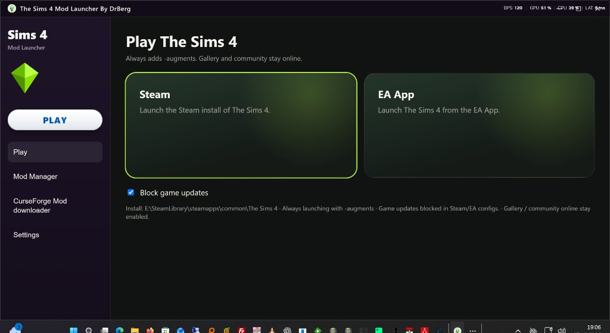
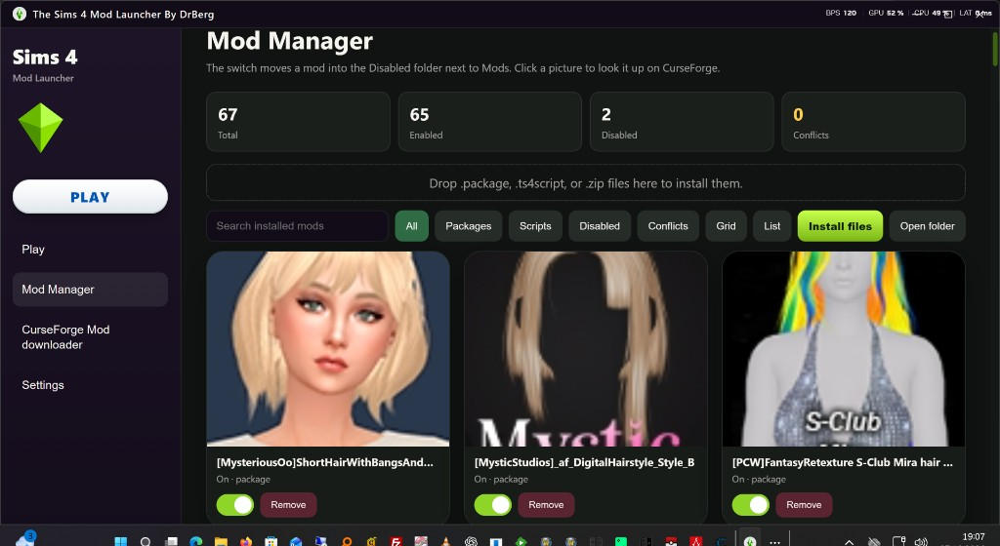
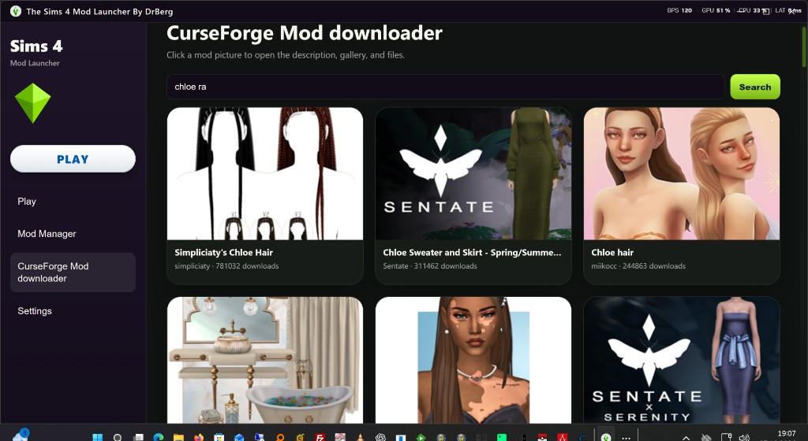
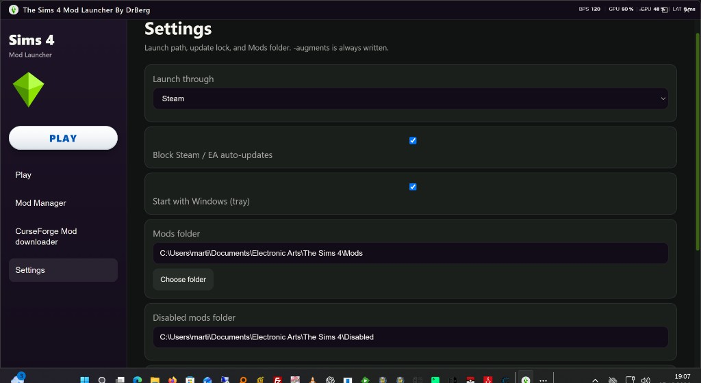

A Windows app for one player on their own PC. It launches The Sims 4, searches CurseForge, and installs a mod into that player's own Mods folder. Turning a mod off only moves the file into a local Disabled folder next to Mods. The app does not upload, rehost, or share mods.

- Always launches with -augments.
- Block game updates while the gallery and community stay online.
- Shows the install path that will be used.

- The switch moves a mod into the Disabled folder next to Mods.
- Drop .package, .ts4script, or .zip files here to install them.
- Filter All, Packages, Scripts, Disabled, or Conflicts, then open the folder.
- Click a picture to look the mod up on CurseForge.

- Click a picture to open the description, gallery, and files.
- The file is downloaded from CurseForge. The app does not rehost or share it.
- The API key stays hidden. Users never see it, and it is not shown in Settings.

- Launch through Steam or the EA App. -augments is always written.
- Block Steam / EA auto-updates.
- Start with Windows and stay in the tray.
- Choose the Mods folder. The Disabled mods folder is created next to it automatically.